| 日付 | 2016年5月2日（月） |
|---|---|
| 山域 | 丹沢 |
| メンバー | 単独 |
| 山行形態 | 日帰り |
| アクセス | 車 |
| ルート (Map) | 中川橋駐車場 (9:58) - (11:04) 遠見山 - (11:26) 大杉山 - (11:40) P845 - (12:29) P956 - (13:04) P762 - (13:35) 堰堤 - (13:46) 中川温泉入口 - (14:08) 中川橋駐車場 |
本日はカレンダー上では平日だが、会社は休み。
子供を保育園に預けた後、久々に単独行で山に行くことにする。
遠出する時間は無いため、今年も丹沢のバリエーションコースを歩いてみることにする。
丹沢の地図を眺めていて目についたのは大杉山。
登山道は無い山だが、ネットで検索して出てきたルートを参考に歩いてみることにする。
誰もいない中川橋の駐車場に車を停める。標高350m。
階段がある場所から山の中に入って行く。
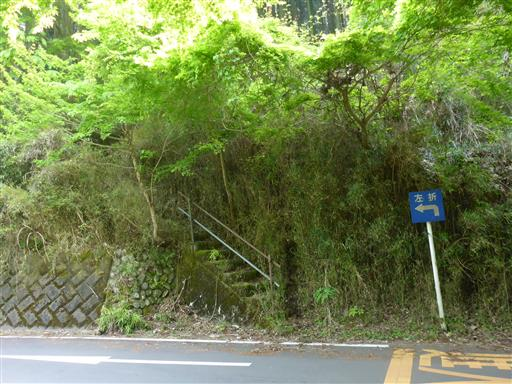
最初は杉の植林地帯の中を登って行く。
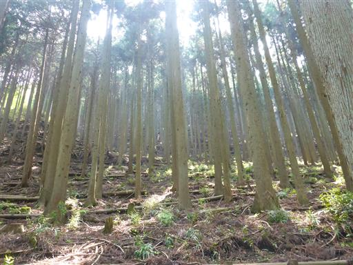
緩やかな傾斜の作業道がジグザグに付けられている。
効率が悪いが、道に沿って歩いて行く。
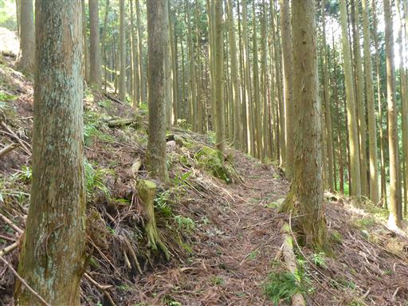
植林地帯が終わると、踏み跡が無くなる。
雑草が生い茂る尾根らしき場所をよじ登る。
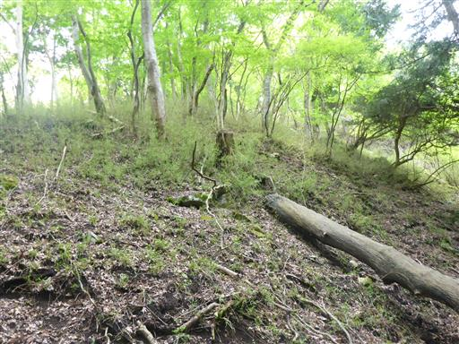
P540mに到着。何も無い小ピークだ。

所々に倒木があり行く手を阻んでいるため、避けて歩いて行く。
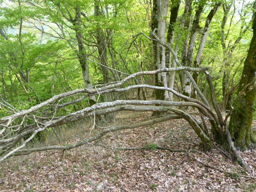
ここからは明瞭な尾根になり、歩きやすくなる。
しかし踏み跡はかなり薄い。ここは完全なバリエーションコースだ。
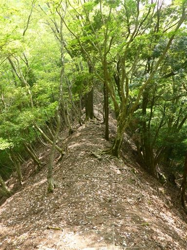
鹿除け柵が現れる。
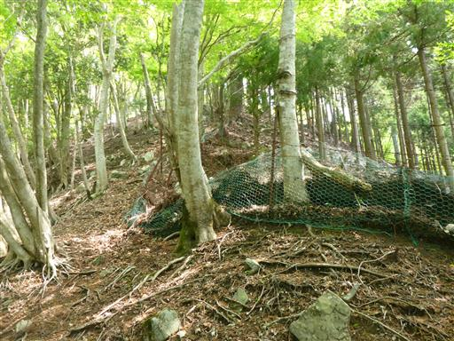
しかし壊れていて、ほとんど用をなしていない。
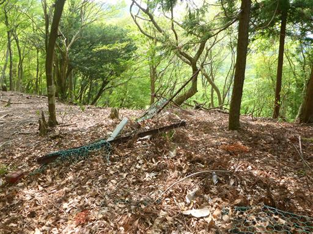
これから向かうピークが樹間から見えている。
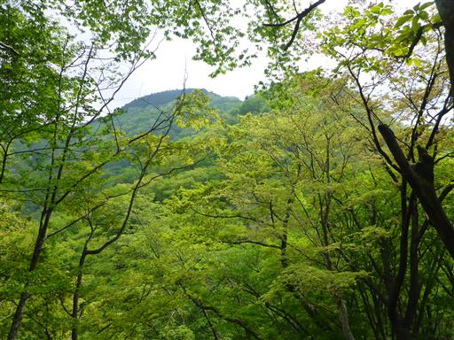
鎌首をもたげた蛇のような形の木。
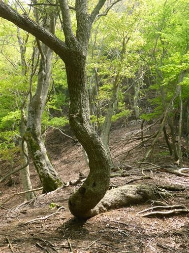
辺りは再び杉植林地帯になる。
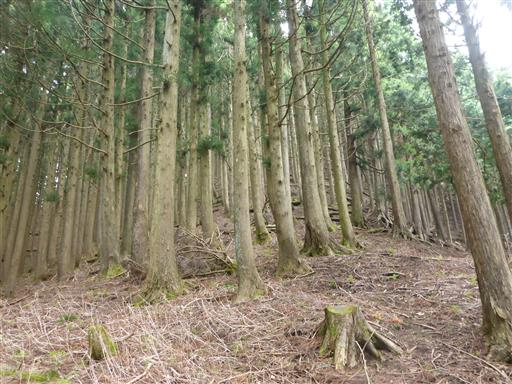
この辺りはミツマタの群落が見られる。
昨年のGWに、近くのミツバ岳に登った際にもミツマタの群落があった。
昨年同様、今年も花はほとんど終わっている。
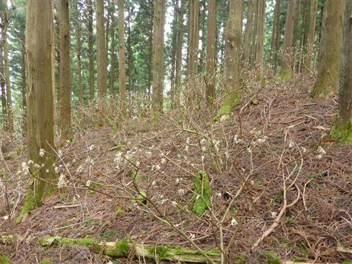
長い斜面を登り終えて遠見山に到着する。標高880m。
本日の登りはこれでほとんど終わりで、ここからは小さなアップダウンが続く。
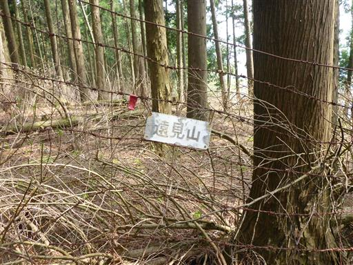
整然と並んだ杉。戸隠神社奥社のような光景だ。
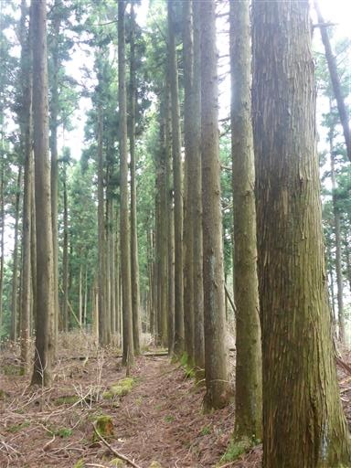
幅が広くて平らな尾根が続く。丹沢の山上にこんな平地があるとは知らなかった。
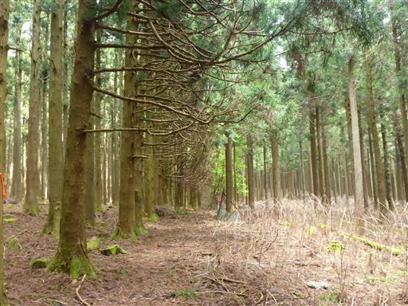
木の皮が剥がれ落ちている。
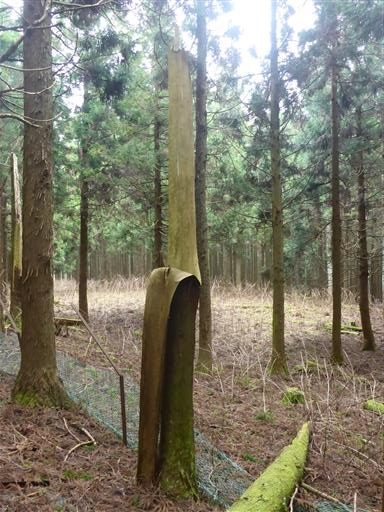
左手に窪地が現れる。水が集まって来るのか、この周囲だけ緑に覆われている。
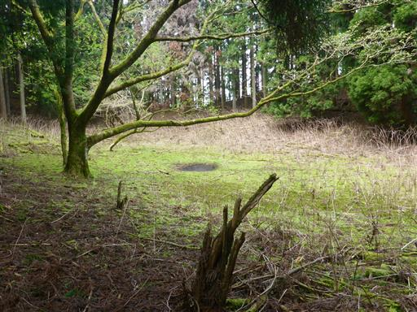
大杉山に到着。標高861m。
辺りを探してようやく小さな小さな山頂標識を見つける。
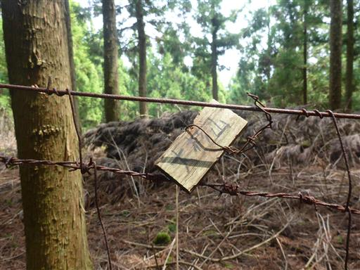
山の名前の通り、確かに辺りは杉ばかりだ。
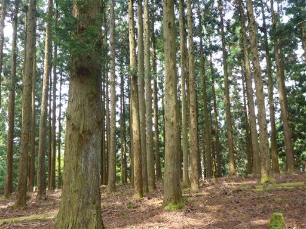
ここから中川温泉に下山する山行記録もあったが、
時間が早いため、もう少し先に進むことにする。
新緑は少し過ぎていて、葉は濃い緑になり始めている。
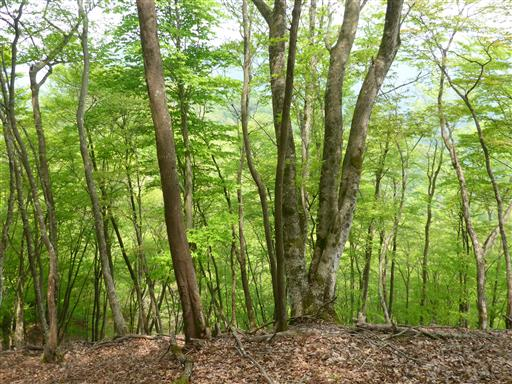
P845mに到着。ここで尾根は右に曲がる。
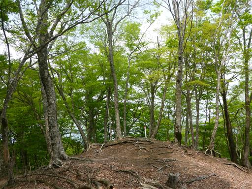
ザレた斜面の下り。白い砂は粒が荒く、非常に滑りやすい。
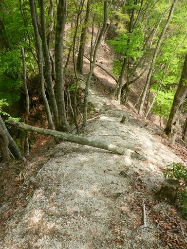
植物相が変わって辺りはアセビだらけになる。
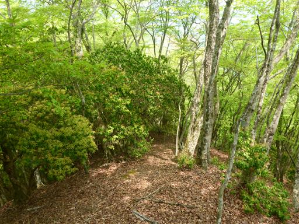
この辺りの地形は急峻で、眼下の沢はどれもこれも垂直に切れ落ちている。
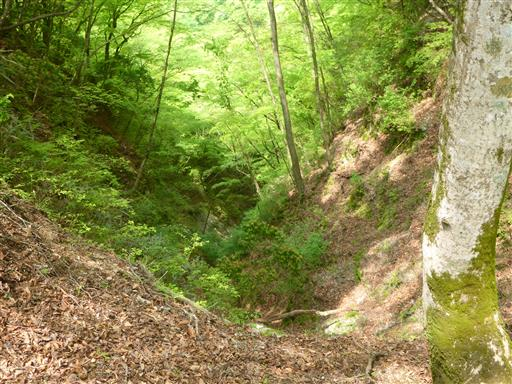
急斜面の尾根を手足フル動員で登る。思った以上に難しい登山道で気が抜けない。
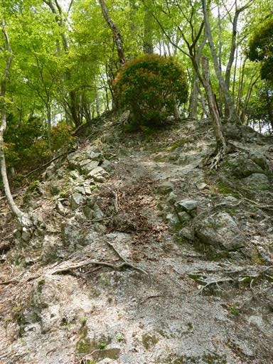
小ピークで尾根が3つに分かれる。
木の幹には←→の矢印と「両方あるよ」と書かれた謎のテープが巻かれている。
地図を見る限り、正しい尾根以外は地獄行だと思うのだが…
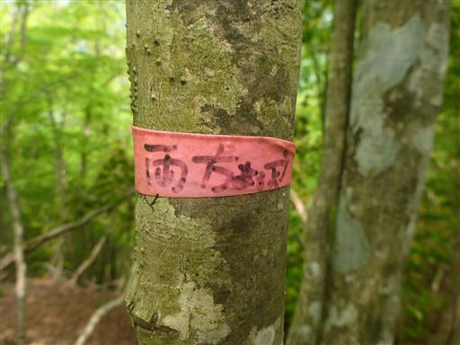
狭い鞍部を越えると再び急斜面になる。
直接登るのは厳しそうなので、左の踏み跡を辿って尾根を巻きながら登る。
それでも急峻な崖を木に捕まりながら登る危険な場所だ。
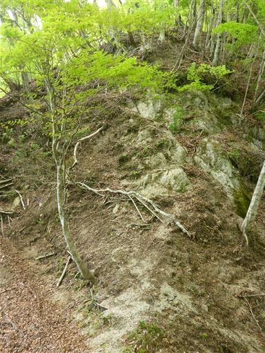
長めの斜面を登りきるとP956mに到着する。標識の類は探してみたが見当たらなかった。
この辺りはブナが非常に美しい。
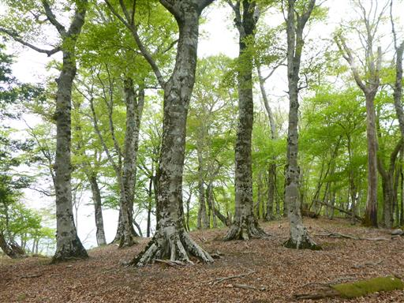
山頂部は比較的広い。後で知ったがここは橅ノ平と呼ばれる場所らしい。
主尾根はこのまま北に続くが、ここから西に続く支尾根を辿って下山に入って行く。
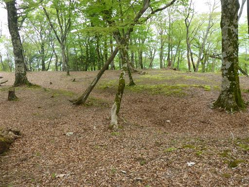
この尾根が広い尾根のため、下るのが非常に難しい。
P762mが樹間からちらちら見えるので、そこを目指して下っていく。
疎な間隔で紫のリボンが付けられている。
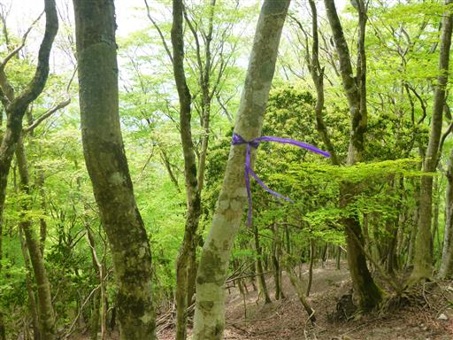
P762mとの鞍部はものすごい痩せ尾根だ。
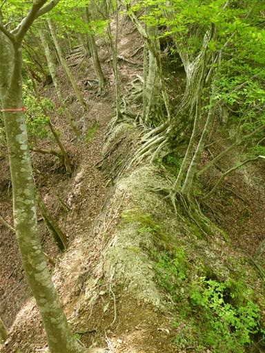
鞍部を越えると突然階段が現れる。
ここにだけ存在する階段で、誰が何のために作ったのか謎だ。
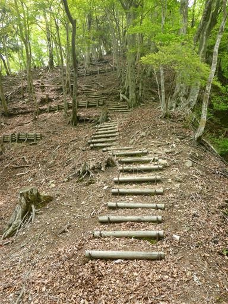
P762mに到着。左に伸びる尾根に下りたいのだが、鹿柵が邪魔をしている。
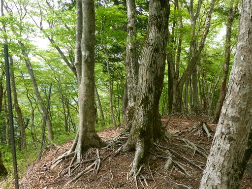
鹿柵を迂回して、目指す尾根らしきものを見つける。
この辺りの地図読みは結構シビアだ。
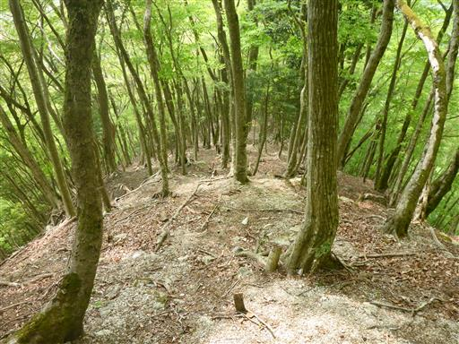
左に分かれる小さな尾根を見送り、しばらく下ると杉の植林地帯になり踏み跡が明瞭になる。
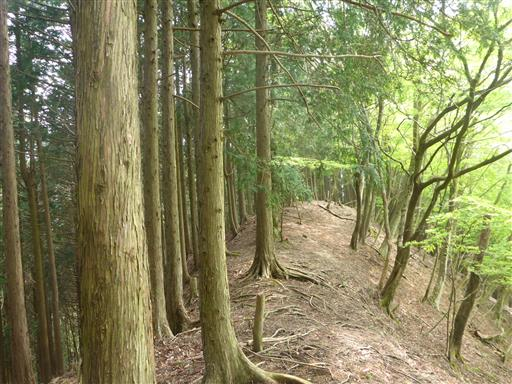
下界に近づいたところで尾根を横切る作業道に突き当たる。
それより先の尾根は急斜面になり踏み跡はなくなる。
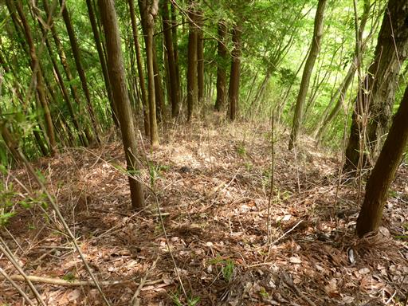
ここで右折して作業道を辿って行く。このまま下山できそうだ。
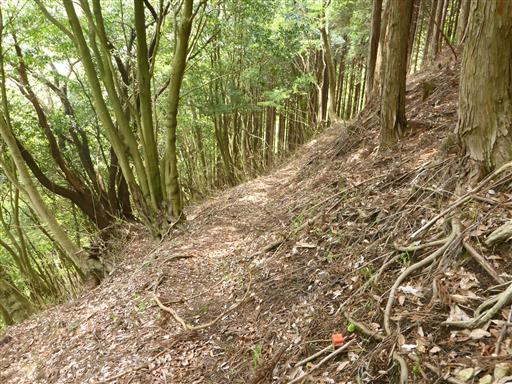
謎の設備がある。完全に錆び付いている。
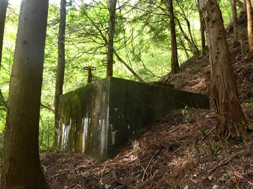
作業道はそのまま沢沿いの道に通じている。無事下山だ。
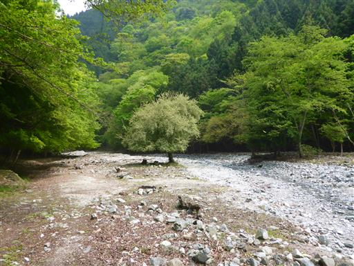
大きな堰堤がある。
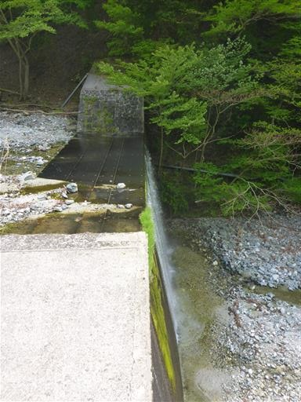
中川川に架かる橋を渡る。大きな石がごろごろしていて、遊ぶには楽しそうな場所だ。
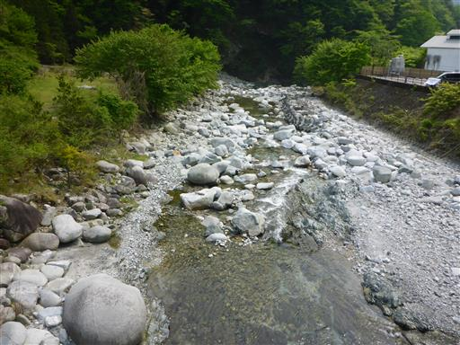
この辺りは中川温泉街。2009年に一度温泉に来たことがある。
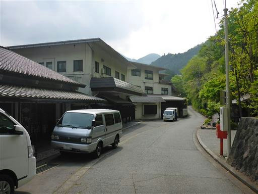
中川温泉入口バス停に到着。あとは車道を20分ほど歩くだけだ。
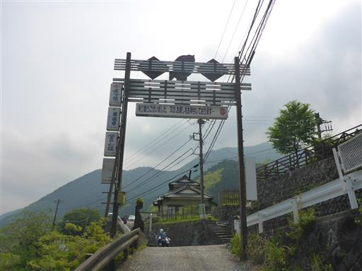
道端に今年初の蛇を見かける。

中川橋に到着。
たった4時間歩いただけだったが、内容の濃い山行だった。
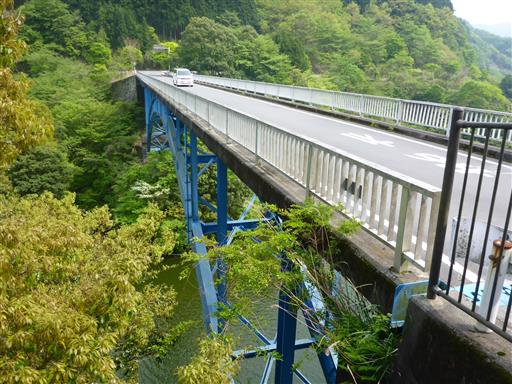